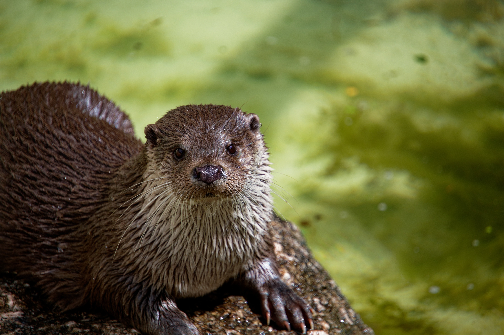

Mountain
A mountain is an elevated portion of the Earth's crust, generally with steep sides that show significant exposed bedrock. A mountain differs from a plateau in having a limited summit area, and is larger than a hill, typically rising at least 300 metres above the surrounding land.
Read More
Otters

Otters are carnivorous mammals in the subfamily Lutrinae. The 13 extant otter species are all semiaquatic, aquatic, or marine, with diets based on fish and invertebrates. Lutrinae is a branch of the Mustelidae family, which also includes weasels, badgers, mink, and wolverines, among other animals.
Read More
Graph

In the computer science world, a graph is popular as a non-linear data structure that is generally used to depict the flow of computation. It is also connected by nodes and edges.
Read More